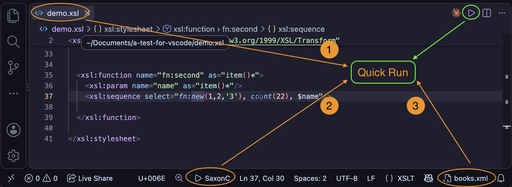

XSLT: Quick Run
Quick Run is the fastest way to run an XSLT stylesheet, without first creating a task
by hand. It can run the stylesheet with any of the three Saxon processors: SaxonJ
(Java), SaxonJS (JavaScript) or SaxonC (native C/C++). It reuses the
same command-line arguments the corresponding XSLT task would use, but takes the stylesheet and XML
source directly from the editor rather than requiring a pre-configured tasks.json entry.

Running a stylesheet
With an XSLT file open in the active editor, invoke Quick Run in one of three ways:
- Press ⌘⌥R (Ctrl+Alt+R on Windows/Linux)
- Click the play button in the editor title bar - its tooltip names the processor currently in use, for example Quick Run with SaxonC
- Run
Quick Run with Saxonfrom the Command Palette
The stylesheet is the active editor's file. The XML source is the current XML context file - the same file used to provide XML node-names when auto-completing XPath location steps, shown in the status bar. This means the context file now serves two purposes: XPath auto-completion, and as the Quick Run source document.
An XML context file must be set before Quick Run can be used - or, for a stylesheet that declares
xsl:initial-template, the context file can be set to None (see
Starting from xsl:initial-template below). Each processor also needs its
own setup:
- SaxonJ - the XSLT.tasks.saxonJar setting must point at your Saxon jar file. See the Saxon (Java) setup section on the XSLT Tasks page.
- SaxonJS - requires a NodeJS installation; the
xslt3package is run using NPX. See the Saxon-JS Tasks section on the XSLT Tasks page. - SaxonC - the XSLT.tasks.saxonCPath setting must point at the folder
containing the SaxonC
Transformexecutable (Transform.exeon Windows). See the SaxonC Tasks section on the XSLT Tasks page for setup details, including native library paths and licensing.
Choosing the processor: SaxonJ, SaxonJS or SaxonC
Quick Run uses SaxonJ by default. When an XSLT or XML file is active, the processor currently selected is shown in the status bar, for example ▶ SaxonJ. To switch processor, use any of the following:
- Click the processor name in the status bar
- Hold ⌥ (Alt on Windows/Linux) and click the play button in the editor title bar - while the key is held, the play button changes to a 'switch' button
- Run
XSLT: Quick Run: Switch Processorfrom the Command Palette
Each of these shows a list of the three processors to pick from, with the current one marked. The play button's tooltip and the status bar update straight away.
The choice is stored in the XSLT.tasks.quickRunProcessor setting, whose values are the
task types: xslt (SaxonJ), xslt-js (SaxonJS) and xslt-c (SaxonC).
You can also edit this setting directly, either as a User setting or as a Workspace setting - for
example, to always use SaxonC for one project. Switching processor updates the setting where it is
already defined (the workspace folder, then the workspace), otherwise it updates your User settings.
First use: a task is created for you
The first time Quick Run is used for a given stylesheet/context-file pairing, a real task is added to
your workspace's tasks.json file (creating the file if it doesn't exist yet) - not just an
ephemeral, one-off run. The generated task:
- is a normal task for the selected processor: an
xslttask for SaxonJ, anxslt-jstask for SaxonJS or anxslt-ctask for SaxonC - is labelled from the stylesheet and context file names, for example demo with books.xml. SaxonJS and SaxonC task labels have the processor name added, for example demo with books.xml (SaxonC)
- uses the
xslt-xpath.pickResultFilecommand for its result path, so you're prompted to choose (or reuse a recently used) output location - the same 'recent files' behaviour described in the Variable References in Tasks section of the XSLT Tasks page - refers to the processor's setting (for example
${config:XSLT.tasks.saxonCPath}) rather than copying its current value, so the task keeps working if you later change the setting - includes an entry in its
parametersarray for every top-levelxsl:paramdeclared with aselectdefault - including params declared in imported or included stylesheets - ready for you to edit
Subsequent runs
Once a task exists for a stylesheet/context-file pairing, Quick Run re-runs that same task rather than creating another one. This means you can freely edit the generated task afterwards - change a parameter value, adjust the result path, add Saxon features or additional parameters - and Quick Run will keep using your edits on every subsequent run, just like running any other task.
Tasks are kept separately for each processor. If you switch processor, the next Quick Run for the same stylesheet/context-file pairing creates a new task for that processor; your existing tasks for the other processors are left unchanged, and are used again if you switch back.
If you want a fresh task instead, either edit the existing one directly, or remove it from
tasks.json and Quick Run will create a new one next time it's used for that
stylesheet/context-file pairing.
Starting from xsl:initial-template
A stylesheet that declares an xsl:initial-template can be run with no source document at all.
To do this, click the XML context file in the status bar and choose None - the last entry
in the list of files. The status bar then shows [no XML context].
With the context file set to None, Quick Run starts the stylesheet from xsl:initial-template
(Saxon's -it command-line option) instead of applying templates to a source document. The
xsl:initial-template can be declared in the stylesheet itself or in any module it imports or
includes. If there isn't one, Quick Run reports an error and offers to pick an XML context file instead.
The task created for this has an empty xmlSource and an empty initialTemplate
property, and is labelled with the stylesheet name, for example
report with xsl:initial-template. It is kept separately from any task for the same
stylesheet that has an XML source, so you can switch between the two just by changing the context file.
None stays selected until you pick a file again - opening or viewing other XML files does not replace it. While it is selected, XPath auto-completion has no source document to take element and attribute names from.
Running from an XML file
Quick Run can also be started from an XML file, to run a stylesheet on it without opening the stylesheet first. With an XML file open in the active editor, invoke it in one of three ways:
- Press ⌘⌥R (Ctrl+Alt+R on Windows/Linux)
- Click the play button in the editor title bar
- Run
XSLT: Quick Run: Run XSLT on this XML Filefrom the Command Palette
This shows a list of the XSLT tasks that can run on the file, grouped as:
- tasks for books.xml (named after the XML file) - every task whose
xmlSourceis this file, for any processor. This includes each task Quick Run has created for a stylesheet with this file as its source, so any stylesheet you've already run on the file is one click away. - tasks for the current file - tasks whose
xmlSourceis${file}, which Visual Studio Code replaces with whichever file is active when the task runs. Use this for general-purpose stylesheets you want to run on any XML file. - Pick Stylesheet... - choose a stylesheet from the recently used list, from any
<?xml-stylesheet?>processing instruction in the XML file, or from the file explorer. Quick Run then creates and runs a task for that stylesheet and this file, using the selected processor, exactly as it would from the stylesheet itself - so it appears under tasks for books.xml next time.
Each task is listed with its processor and stylesheet path, and you can type to filter on any of these. If there are no matching tasks yet, Quick Run goes straight to picking a stylesheet. As with the stylesheet's play button, holding ⌥ (Alt on Windows/Linux) while clicking the XML file's play button switches the processor instead.
A task that runs on the current file looks like this:
{
"type": "xslt",
"label": "Summarise",
"saxonJar": "${config:XSLT.tasks.saxonJar}",
"xsltFile": "${workspaceFolder}/tools/summary.xsl",
"xmlSource": "${file}",
"resultPath": "${command:xslt-xpath.pickResultFile}"
}
The XML context file is remembered
Your chosen XML context file is now restored automatically when Visual Studio Code is reopened, rather than defaulting back to the last XML file you happened to view. It's stored per workspace, separately from the 'recently used' file list, so viewing other XML files - for example a transform's result - does not change what gets restored. Choosing None is remembered in the same way.